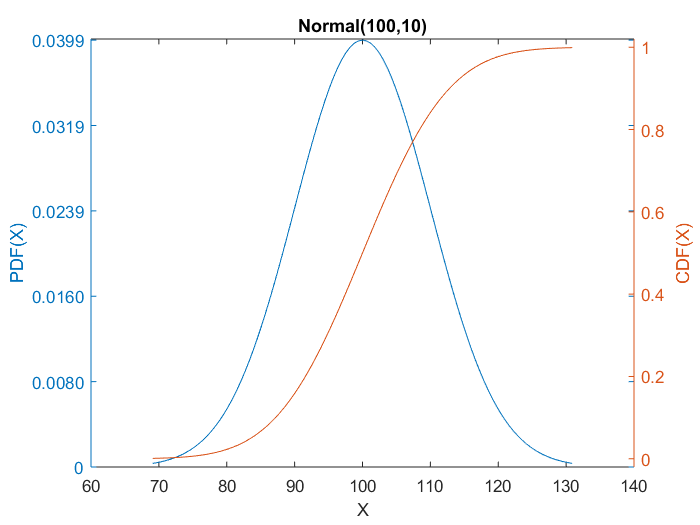
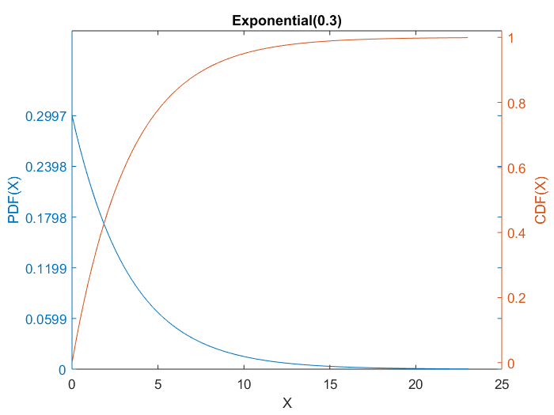
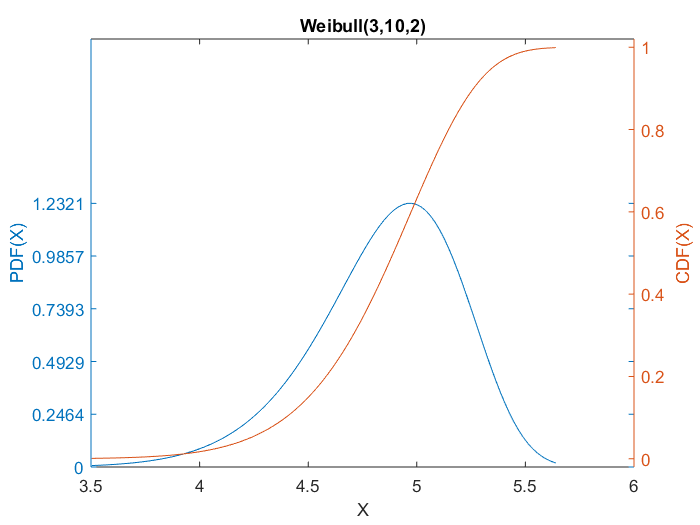
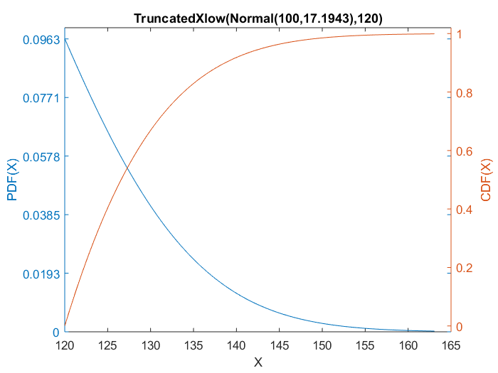
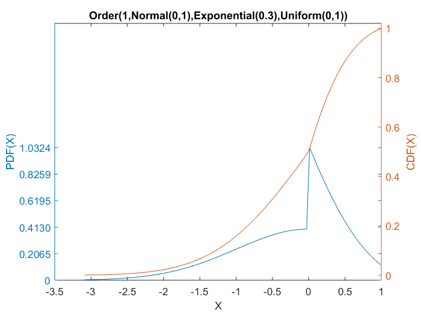
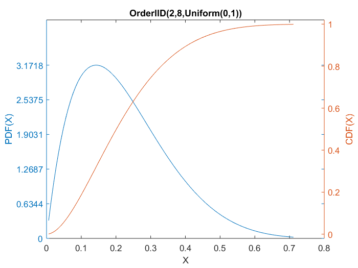
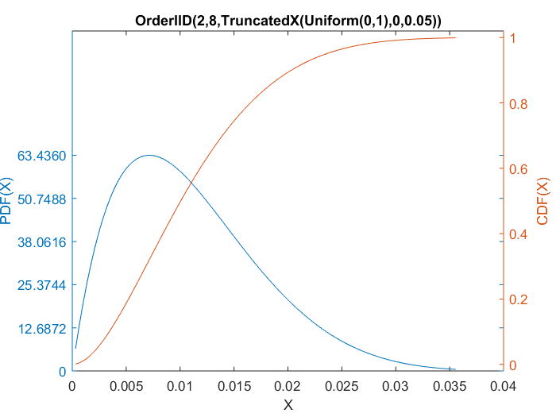

Start with this demo
This demo gives a brief demonstration of what CUPID does & how to use it.
Contents
- Usually the first step is to create a distribution object.
- Plotting the distribution.
- A few more example distributions.
- Distributions can also be used without assigning them to objects.
- Compute distribution properties.
- Generate random numbers.
- Parameter estimation.
- Parameter estimation with some parameter(s) fixed:
- Forming truncated distributions.
- Forming transformed distributions.
- Other derived distributions: E.g., Order statistics.
- Composing distributions.
Usually the first step is to create a distribution object.
A CUPID distribution is creating by giving the object name (in this case "Normal") and the distribution parameters, like this:
IQdist = Normal(100,10);
Plotting the distribution.
Once it is created, you can do many different things with the distribution object, including fitting it to data. One of the simplest things is to plot its density and cumulative density functions, like this:
IQdist.PlotDens;
A few more example distributions.
The PDF documentation lists dozens of basic distributions that have been implemented so far. It is easy to add new distributions for which you know at least either the PDF or the CDF. Here are two more quick examples:
WaitingTime = Exponential(.3); WaitingTime.PlotDens; Cost = Weibull(3,10,2); Cost.PlotDens; 
Distributions can also be used without assigning them to objects.
That is, you can just give a distribution name and function, say like this:
expMean = Exponential(.3).Mean;
fprintf('The mean of an exponential distribution with rate parameter .3 is %f\n',expMean);
The mean of an exponential distribution with rate parameter .3 is 3.333333
Compute distribution properties.
The PDF documentation lists the many functions that can be computed for any CUPID distribution. To invoke the object's function, I like to use the OBJECTNAME.FUNCTION syntax: Here are a few examples:
fprintf('Mean IQ = %f\n',IQdist.Mean); fprintf('An IQ of 120 is at the %4.1fth percentile\n',100*IQdist.CDF(120)); fprintf('The IQ at the 99th percentile = %f\n',IQdist.InverseCDF(.99)); fprintf('The variance of the waiting times = %f\n',WaitingTime.Variance); fprintf('Median Cost = %f\n',Cost.Median);
Mean IQ = 100.000000 An IQ of 120 is at the 97.7th percentile The IQ at the 99th percentile = 123.263479 The variance of the waiting times = 11.111111 Median Cost = 4.892037
Because of the object-oriented approach, all of these properties can be computed for any new distribution, even if only the PDF or CDF is available.
Generate random numbers.
A vector or matrix of random numbers can be generated from any distribution:
WaitingTime.Random(10,1)
ans =
6.1587
0.099494
0.14592
2.4094
0.74264
6.5091
2.8777
0.29343
0.77644
0.13784
Parameter estimation.
The parameters of any CUPID distribution can be estimated in various ways, including: maximum likelihood, method of moments, chi-square goodness of fit, matching certain desired percentiles, etc. As one example, here is the command to estimate the parameters of the IQdist distribution so that the IQdist scores of 80 and 120 are at the 40th and 60th percentiles, respectively.
IQdist.EstPctile([80 120],[0.4 0.6]); fprintf('The estimation process changes the parameters of the distribution.\n'); fprintf('The distribution now has a mean and sd of %f and %f,\n',IQdist.Mean,IQdist.SD) fprintf(' for which scores 80 and 120 have CDF of %f and %f as requested.\n\n',IQdist.CDF(80),IQdist.CDF(120));
The estimation process changes the parameters of the distribution. The distribution now has a mean and sd of 100.000000 and 78.943078, for which scores 80 and 120 have CDF of 0.400000 and 0.600000 as requested.
Parameter estimation with some parameter(s) fixed:
During parameter estimation, it is also possible to hold one or more parameter values fixed by including an optional "ParmCodes" parameter. For example, suppose we want to hold the mean fixed at 100 and adjust the SD so that an IQdist of 140 is at the 99th percentile:
IQdist.EstPctile([140],[0.99],'fr'); % 'fr' says to fix the first parameter and vary the second parameter as a real number. fprintf('This gives a new distribution with mean and sd of %f and %f,\n',IQdist.Mean,IQdist.SD) fprintf(' for which 140 has a CDF of %f as requested.\n\n',IQdist.CDF(140));
This gives a new distribution with mean and sd of 100.000000 and 17.194333, for which 140 has a CDF of 0.990000 as requested.
Forming truncated distributions.
Any CUPID distribution can be truncated to look at the conditional distribution with the score in a certain range. For example, we can consider the part of the previous IQ distribution with IQs above 120:
HiIQdist = TruncatedXlow(IQdist,120);
HiIQdist.PlotDens;
fprintf('This gives a new distribution with mean and sd of %f and %f.\n',HiIQdist.Mean,HiIQdist.SD)
This gives a new distribution with mean and sd of 128.496554 and 7.315912.
Forming transformed distributions.
CUPID also has many distribution classes that represent new distributions formed as mathematical transformation of some other distribution. For example, here is the distribution of the square-root of a gamma distribution:
SqrtG = SqrtTrans(RNGamma(3,1));
A transformed distribution can be used just like any other distribution. For example, we can get its properties:
fprintf('This transformed distribution has mean = %8.3f and standard deviation = %8.3f.\n',SqrtG.Mean,SqrtG.SD);
This transformed distribution has mean = 1.662 and standard deviation = 0.489.
We can also estimate the parameters of this transformed distribution, here using the method of moments:
SqrtG.EstMom([2.3 .09]) [ SqrtG.Mean SqrtG.Variance]
ans =
SqrtTrans(RNGamma(14.8163,2.754))
ans =
2.3 0.09
As another example, here is the distribution of the log of the previous Weibull distribution:
LogCost = LogTrans(Cost); [LogCost.Mean LogCost.SD]
ans =
1.5772 0.072925
The PDF documentation lists many supported transformations.
Other derived distributions: E.g., Order statistics.
Other CUPID classes support distributions that are derived from multiple underlying distributions, including distributions of sums (convolutions), differences, mixtures, order statistics, ... For example, here is the distribution of the minimum (1st order statistic) in a sample of 3 independent scores, one of which is normal, one of which is exponential, and one of which is uniform.
Min1 = Order(1,Normal(0,1),Exponential(.3),Uniform(0,1));
fprintf('This gives a new distribution with median and sd of %f and %f.\n',Min1.Median,Min1.SD)
Min1.PlotDens
This gives a new distribution with median and sd of -0.000000 and 0.734802.
There is a short-cut for order statistics from an IID sample: For example, "Ord2of8" is defined as the second order statistic from a sample of 8 Uniform(0,1) random variables:
Ord2of8 = OrderIID(2,8,Uniform(0,1));
fprintf('This gives a new distribution with mean and sd of %f and %f.\n',Ord2of8.Mean,Ord2of8.SD)
Ord2of8.PlotDens
This gives a new distribution with mean and sd of 0.222222 and 0.131468.
Composing distributions.
Because of the OO approach, any derived CUPID distribution is itself a new distribution, and so a further new distribution may be derived from it. In essence, the distribution specifications can be composed, as in f(g(x)). As an example, here is the truncation operation applied to the Ord2of8 distribution:
TruncOrdP = TruncatedX(Ord2of8,0,.05);
fprintf('The truncated distribution of the order statistic has a mean and sd of %f and %f.\n',TruncOrdP.Mean,TruncOrdP.SD)
TruncOrdP.PlotDens
The truncated distribution of the order statistic has a mean and sd of 0.032457 and 0.012013.

So, this is the distribution of the 2nd order statistic from 8 uniform(0,1) RVs, conditional on that order statistic falling in the range of 0 to 0.05 (somewhat like a significant p value in hypothesis testing).
As another example, we start with the Uniform(0,1) distribution, truncate it so that it is restricted to the range p<.05, and then take the 2nd order statistic of 8 such RVs. Do you think that gives the same distribution as TruncOrdP formed earlier?
OrdTruncP = OrderIID(2,8,TruncatedX(Uniform(0,1),0,.05));
fprintf('The order statistic of the truncated distribution has mean and sd of %f and %f.\n',OrdTruncP.Mean,OrdTruncP.SD)
OrdTruncP.PlotDens
The order statistic of the truncated distribution has mean and sd of 0.011111 and 0.006574.
Answer: Obviously, no, this is quite a different distribution!